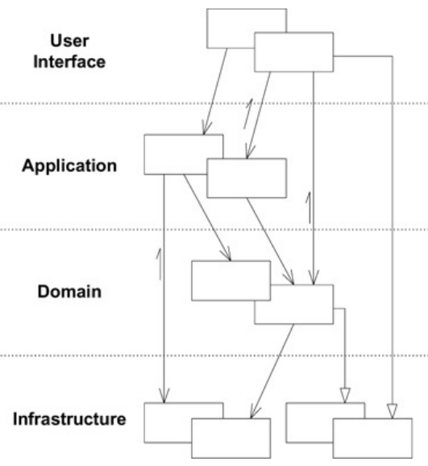
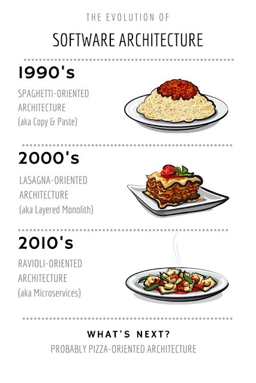
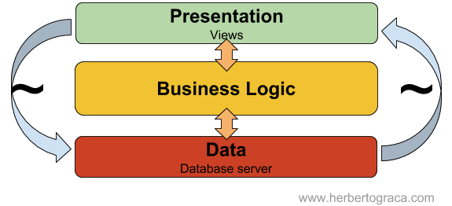
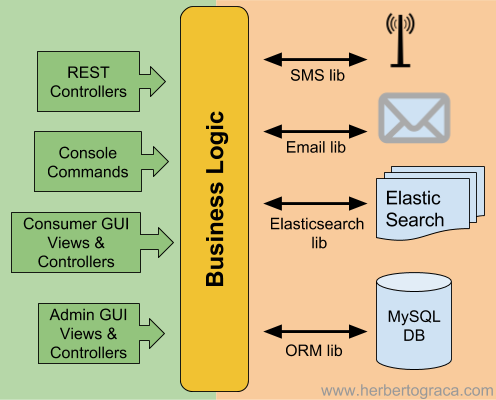
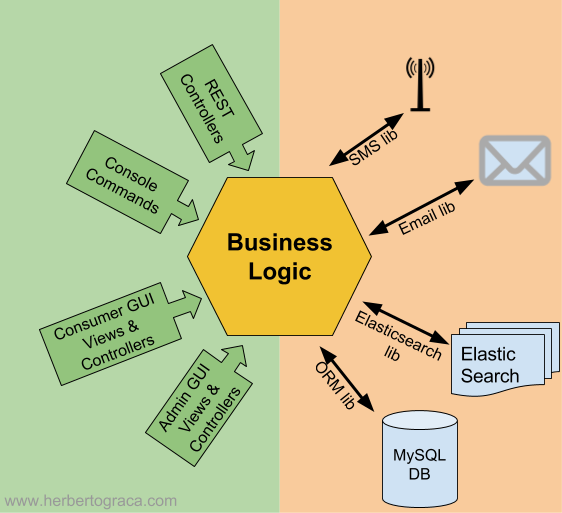

Layered Architectures
https://github.com/samzilverberg/layered-architecturesIn a layered system, each layer:
- Depends on the layers beneath it
- Independent of the layers above it

The Good:
- We only need to understand the layers beneath the one we are working on
- Replaceable by similar impl without impacting the other layers
- Standardisation on the layer level
- Reusability by more than 1 higher-level layers
The Bad:
- Propagation of changes: a field added to the UI layer most likely also needs to be added to the DB layer
- Extra layers can harm performance, especially if in different physical locations.
The Ugly: Lasagna Architecture Anti Pattern
If we:
- Have a large code-base (monolith?)
- And try to create the perfect layered setup
- By over-abstracting
- By organizing our code according to layers
We end up with a happy lasagne, in which every small change to a layer reverberates throughout the layers
You should try to organize code by components e.g. Product, Payment, Checkout

Introduced as an attempt to avoid common problems with the layered architecture
Problems:
- Leakage of business logic into presentation layers
- Dependency and direct instantiation of external libs into business logic
This makes the layers harder to replace and the app harder to test.
original layers =>

only center (app) is important,
its our core business.
top bottom are entry/exit points.
top bottom are entry/exit points.
tilted on side =>

escaping the layered mindset
arranged into hexagon

for convenience

Definitions
- Ports
- Interfaces that describe entry/exit points into/out-of the application
- Adapters
- Concrete implementations of the ports
- Primary/Driving Adapters
- They start the action
- Secondary/Driven Adapters
- They react to action the primaries started
- More internal layers
- Inspired by DDD
- Outer layers depend on inner layers
- Inner layers do not know about outer layers
- Looks like an onion

Doesn't really add any new concepts on top of Hexagonal & Onion
Just repeats the same with some different terms
Explicitly formalizes some implicit rules and the flow of a request with the diagram at the corner

Explicit Architecture by Herberto Graca (source)

ties everything together with explicit project/code structure
Thanks, questions? ...
lets discuss
- how is it at your team?